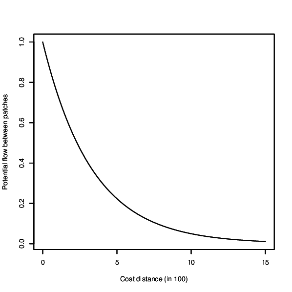
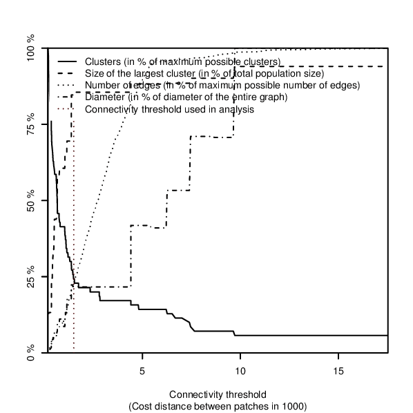
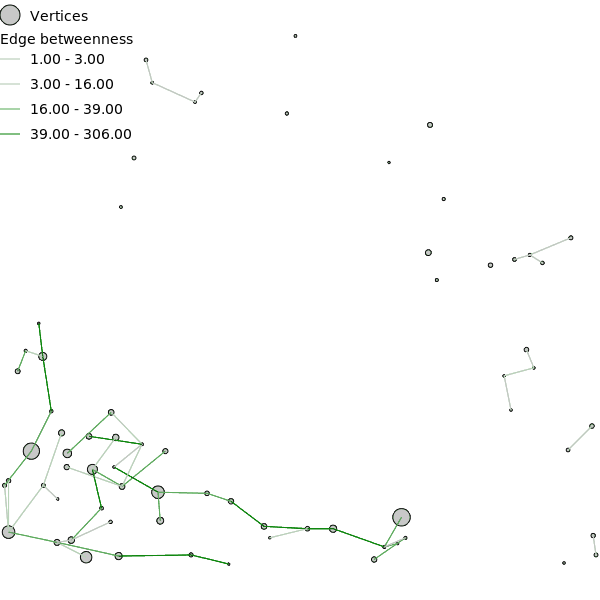
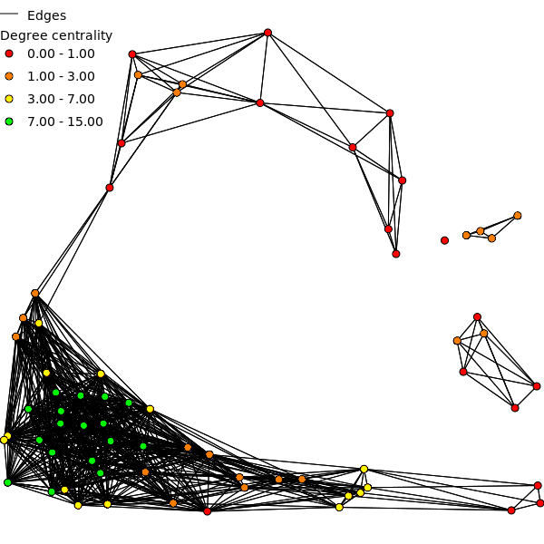

DESCRIPTION
r.connectivity.network is the 2nd tool of the r.connectivity.* tool-set and
performs network analysis (using the igraph-package in R). It requires a network
dataset produced with r.connectivity.distance, and conducts analysis on the graph,
edge and vertex level.
The analysis is based on a negative exponential decay kernel (as described
e.g. in Bunn et al. (2000), which characterizes the probability of dispersal
over increasing cost distance. The user can modify the function and thus
form of the kernel according to the dispersal characteristics of her/his
species or habitat type. Form of the curve can be controlled with the base
and exponent options. The resulting kernel can be visually inspected
using the x-flag. If the kernel_plot option is given a plot
of the kernel is saved in the format depending on the ending of the file name
defined by the user.
If an overview plot is requested in the overview option,
network characteristics are visualised in a plot showing an overview over:
- the number of connections,
- the number of components (clusters) and
- the size of the largest network component within the network
over increasing cost-distance between patches.

Figure: Dispersal kernel used for network analysis in the example below.
Output column names
Due to limitations in dbf, the length of field names is limited to ten signs.
Thus, names of the edge and vertex measures are abbreviated in the vector
attribute table. This was (mostly) done using the following pattern for
column names (of vertex and edge measures):
- weight _ measure _ (sub)graph
(Sub)Graphs
In r.connectivity.network a graph is built from the network dataset produced
in r.connectivity.distance. From this full and directed graph a set of
(sub)graphs is extracted, specified by:
- u = for the undirected graph
- d = for the graph with only direct edges
- c = for the graph with only edges shorter than the cost distance threshold
Graph measures
- Number of edges
- The number of edges is the number of connections between pairs of vertices
in the network.
- Number of vertices
- The number of vertices is the number of polygons (patches) from the input
vector map which are analysed in the r.connectivity.*.
- Cluster
- A cluster is a group of vertices which are connected with each other, but
not with the rest of vertices in a graph (a single isolated vertex can be a
cluster as well).
- Diameter
- The diameter of a graph is the length of the longest geodesic.
- Density
- The density of a graph is the ratio of the number of edges and the number
of possible edges.

Figure: Overview plot over fragmentation of the network when edges of
increasing length are removed, produced in the example below.
Edge measures
- Input parameters
- con_id = ID of the directed connection between two vertices (edge)
- con_id_u = ID of the undirected connection between two vertices (edge)
- from_p = Patch ID (patch_id) of the start-vertex of an (directed) edge
- from_pop = Population proxy (pop_proxy) of the start-vertex of an (directed) edge
- to_p = Patch ID (patch_id) of the end-vertex of an (directed) edge
- to_pop = Population proxy (pop_proxy) of the end-vertex of an (directed) edge
- Weights
- Cost distance (cd)
- Cost distance is calculated for the directed (cd) and undirected graph (cd_u).
The cd weight for directed edges is exactly like measured in r.connectivity.distance,
the cd weight for undirected edges is the average cost distance of the two directed edges
between a pair of vertices (mean( a--b, b-a)). The cost distance weight does not take the
user defined dispersal information (the population proxy for the different patches and
the dispersal kernel) into account.
- Negative exponential decay kernel flow (distk)
- The negative exponential decay kernel is defined by the variables euler,
base, and exponent specified by the user. It is calculated for the
directed (distk) and undirected edges(distk_u) using the following formulas:
- distk = euler ^ ( ( basis * ( 10 ^ exponent ) )*( cd))
- distk_u = euler ^ ( ( basis * ( 10 ^ exponent ) )*( cd_u))
- Maximum potential flow (mf)
- For the maximum potential flow (mf) weight the user defined dispersal information
(the population proxy and the dispersal kernel) is used to model the flow of propagules
between a pair of vertices. This weight is based on the assumption that propagules disperse
evenly and in full amount into all surrounding patches. Maximum potential flow is
calculated using the following formula:
- mf = disk * pop_proxy
- Maximum potential flow is calculated for the directed graph as incoming (mf_i) and
outgoing (mf_o) flow as well as for the undirected graph (mf_u). Unlike the cost distance
weight, mf represents the "closeness" of a pair of vertices. For some (most) algorithms it
had to be inverted in order to give meaningful results (mf_inv = Inverted maximum potential
flow for directed edges, mf_inv_u = Inverted maximum potential flow for undirected edges).
- Competing potential flow (cf)
- The competing potential flow (cf) weight is based on the work by Ranius & Roberge 2011.
Like in the maximum potential flow (mf) weight, the user defined dispersal information
(the population proxy and the negative exponential decay kernel) is used to model the flow
of propagules between a pair of vertices. But here it is assumed that the total amount
of propagules is limited to the population proxy given by the user, and that this amount
is distributed according to the "attractiveness" (defined by population size and cost
distance) of the surrounding patches.
- Competing potential flow is calculated for the directed (cf) and undirected (cf_u)
graph. Unlike the cost distance weight, cf represents the "closeness" between a pair
of vertices. For some (most) algorithms it had to be inverted in order to give meaningful
results (cf_inv = Inverted competing potential flow for directed edges, cf_inv_u =
Inverted competing potential flow for undirected edges).
- The mf and cf weights are inverted (mf_inv, cf_inv) by multiplying them with -1
followed by linear normalising to the original maximum and minimum values.
- Output parameters
- Shortest connections (isshort)
- In r.connectivity.network all edges are classified if they represent the
shortest path from the start- to the end-vertex, which is stored as a logical
value (0 = FALSE or 1 = TRUE). Shortest connections are identified for every
weight (isshort_cd, isshort_mf, isshort_cf). Finally the isshort attribute
is set to 1 if an edge represents the shortest path for either the cd-weight,
the mf-weight or the cf-weight (or 0 otherwise).
- Biconnected components (bc)
- If the removal of a single vertex and its adjacent edges does not disconnect
the graph (increase the number of clusters) it is part of a biconnected component.
- Bridges (is_br)
- A bridge is an edge whose removal increases the number of clusters in a graph.
Edges are classified either as bridge (1) or not (0).
- Edge betweenness (eb)
- The edge betweenness (eb) value represents the number of shortest paths that go
through an edge, considering the shortest paths between all possible pairs of vertices.
Edge betweenness is calculated with all three weights for the entire directed graph
(cd_eb_u, mf_eb_u, cf_eb_u), the undirected graph with only direct edges (cd_eb_ud,
mf_eb_ud, cf_eb_ud), and the undirected graph with only direct edges shorter than cost
distance threshold (cd_eb_udc, mf_eb_udc, cf_eb_udc).
- Local edge betweenness (leb)
- The local edge betweenness (leb) value represents the number of shortest paths
that go through an edge, considering the shortest paths between all possible
pairs of vertices which are shorter than the user defined local
neighbourhood (lnbh_threshold). Local edge betweenness is calculated with all
three weights for the entire directed graph (cd_leb_u, mf_leb_u, cf_leb_u),
the undirected graph with only direct edges (cd_leb_ud, mf_leb_ud, cf_leb_ud),
and the undirected graph with only direct edges shorter than cost distance
threshold (cd_leb_udc, mf_leb_udc, cf_leb_udc).
- Edge betweenness community (ebc)
- Some groups of vertices can be densely connected with each other but only
little connected to other vertices. Such groups of relative intense connected
vertices are communities. One algorithm to identify communities in a graph is
edge betweenness community (ebc). Edge betweenness community is calculated
in an iterative loop, where, first edge betweenness is calculated, then the
edge with the largest edge betweenness value is removed, edge betweenness is
recalculated and so on. The algorithm produces mainly two edge measures:
- 1. the order in which edges were deleted (ebc_r)
- 2. the edge betweenness value of an edge at the time of removal
- For large graphs calculating edge betweenness community can take a long time.
Therefore, it is only calculated on request (y-flag) and only for one weight (cf).
It is only calculated for the entire (undirected) graph.
- Minimum spanning trees (mst)
- A minimum spanning tree (mst) is a subgraph consisting of the minimal possible
number of edges (= number of vertices - 1) connecting all vertices to a minimal
possible number of clusters, while the sum of all edge weights is minimised.
If the graph consists of more than one cluster, the result of the minimum spanning
tree algorithm is a so-called minimum spanning forest, consisting of the minimum
spanning tree for each cluster. In the context of nature conservation, the minimum
spanning tree is sometimes referred to as the "backbone" of an area network
(Bunn etal. 2000). In r.connectivity.network the minimum spanning tree/forest
is calculated with all weights (cd, mf, cf) and for all undirected (sub)graphs
(u, ud, udc) resulting in the following (logical) edge measures:
cd_mst_u, cd_mst_ud, cd_mst_udc, mf_mst_u, mf_mst_ud, mf_mst_udc,
cf_mst_u, cf_mst_ud, cf_mst_udc, where edges are either part of the minimum
spanning tree/forest (1) or not (0).
- Potential cluster connectors (cl_pc_u)
- A cluster is a group of vertices which are connected with each other, but
not with the rest of vertices in a graph (a single isolated vertex can be a
cluster as well). Potential cluster connectors are edges which are longer
than the connectivity threshold, and connect clusters in the subgraph with
only edges shorter than the connectivity threshold.
- Potential community connectors (cf_ebc_pc, cf_iebc_pc)
- Potential community connectors are edges which connect communities identified
by the edge betweenness community algorithm for a user defined community level.

Figure: Edge betweenness of the network for all edges on the Minimum
Spanning Tree (MST).
Vertex measures
- Input parameters
- Patch ID (patch_id)
- ID of the vertex = category value (cat) of the patch vector given by the user
in r.connectivity.distance.
- Population proxy (pop_proxy)
- The population proxy given by the user in r.connectivity.distance.
- Output parameters
- Cluster membership (cl)
- A cluster is a group of vertices which are connected with each other,
but not with the rest of vertices in a graph (a single isolated vertex is a
cluster as well). The cluster membership value (integer) is the id of the
cluster a vertex belongs to.
- Community structure and membership (cf_(i)ebc_cs, cf_(i)ebc_cl)
- The edge betweenness community algorithm is used to analyse the community
structure of a graph. It results in a hierarchical structure which describes
how a graph is split up by the edge removal process into an increasing number
of communities. The hierarchical community structure is stored as the
(character) vertex attribute "cf_ebc_cs". The community membership value
(integer) is the id of the community (identified by edge betweenness community)
a vertex belongs to (on a user defined level of community division).
- Articulation points (art_p)
- Articulation points (art_p) are vertices whose removal would increase
the number of clusters in a graph. Articulation points are identified for
the entire directed graph (art_p_u), the undirected graph with only direct
edges (art_p_ud), and the undirected graph with only direct edges shorter
than the cost distance threshold (art_p_udc). Articulation points (art_p) are a
(logical) measure of the graph structure and do not take edge weights into
account. Vertices are either articulation points (1) or not (0).
- Articulation (art)
- The articulation value (integer) (art) is the number of new clusters which
would occur when a vertex is removed. The articulation value (art) is a measure
of the graph structure and does not take edge weights into account.
- Degree centrality (deg)
- Degree centrality of a vertex is defined as the number of vertices connected
to this vertex. This (integer) measure is a measure of the graph structure and
does not take edge weights into account. Degree centrality is calculated for
all three undirected graphs (deg_u, deg_ud, deg_udc).
- Eigenvector centrality (evc)
- Eigenvector centrality (evc) in r.connectivity.network is a variation of the
eigenvector centrality algorithm provided by the igraph library (see also: Csardi
& Nepusz 2006). In r.connectivity.network eigenvector centrality is the sum of
incoming potential flow of a vertex.
- Because eigenvector centrality takes the direction of potential flows into
account it is calculated only for the directed graph and the directed graph with
only edges shorter than connectivity threshold, using both cf and mf weight
(cf_evc_u, cf_evc_uc, mf_evc_u, mf_evc_uc). Eigenvector centrality is stored
with double precision.
- Closeness centrality (cl)
- Closeness centrality represents the number of steps which are necessary
to access every other vertex from a given vertex. Closeness centrality
(integer) is calculated with all three weights for the entire directed
graph (cd_cl_u, mf_cl_u, cf_cl_u), the undirected graph with only direct
edges (cd_cl_ud, mf_cl_ud, cf_cl_ud), and the undirected graph with only
direct edges shorter than cost distance threshold
(cd_cl_udc, mf_cl_udc, cf_cl_udc).
- Vertex betweenness (vb)
- The vertex betweenness (vb) value represents the number of shortest paths
that go through a vertex (but that do not start or end in that vertex),
considering the shortest paths between all possible pairs of vertices.
Vertex betweenness is calculated with all three weights for the entire
directed graph (cd_vb_u, mf_vb_u, cf_vb_u), the undirected graph with
only direct edges (cd_vb_ud, mf_vb_ud, cf_vb_ud), and the undirected
graph with only direct edges shorter than cost distance threshold
(cd_vb_udc, mf_vb_udc, cf_vb_udc).
- Local vertex betweenness (lvb)
- The local vertex betweenness (lvb) value represents the number of shortest
paths that go through a vertex (but that do not start or end in that vertex),
considering the shortest paths between all possible pairs of vertices which are
shorter than the user defined local neighbourhood (lnbh_threshold). Local vertex
betweenness is calculated with all three weights for the entire directed graph
(cd_vb_u, mf_vb_u, cf_vb_u), the undirected graph with only direct edges
(cd_vb_ud, mf_vb_ud, cf_vb_ud), and the undirected graph with only direct edges
shorter than cost distance threshold (cd_vb_udc, mf_vb_udc, cf_vb_udc).
- Neighbourhood size (nbh_s)
- The neighbourhood size (nbh_s) is the number of other vertices which
can be reached from a vertex.
- Local neighbourhood size (nbh_sl)
- The local neighbourhood size (nbh_sl) is the number of other vertices
which can be reached from a vertex along a path which is shorter than the
user defined local neighbourhood.

Figure: Degree centrality computed for the patches in the network.
REQUIREMENTS
For running this tool R language and environment for statistical computing and graphics
has to be installed (see: http://www.r-project.org)
together with the R-Python bridge rpy2.
On Windows the path to R has to be added to the %path% variable in the environment settings
(see:
https://grass.osgeo.org/wiki/R_statistics#MS_Windows) and GRASS GIS has to be started after
that.
Furthermore the
igraph package in R is required with version 1.0 or newer.
For parallel processing
(at the moment only supported for Linux) the R packages
doMC,
multicore,
iterators,
codetools and
foreach are required as well.
All R packages can be installed by running the AddOn using the i-flag (-i).
Installation of R packages requires internet access.
For postscript output (overview and kernel plot) also ghostscript
is required.
EXAMPLE
The following example is based on the North Carolina dataset
and continued from the example in r.connectivity.distance.
Analyse the network
(r.connectivity.network)
In the next step network analysis is performed. We define the connectivity
cutoff (maximum cost distance where connectivity is assumed) to be 1500.0
cost distance units, which represents the maximum known dispersal ability
of our species. The dispersal kernel is adjusted to characteristics of this
species by setting the exponent to -3, which gives a steeper decrease in
successful dispersal with increasing cost distance. Only very few dispersal
units of our species are expected to cross more than ca. 900 cost distance
units successfully (see: ./hws_connectivity/kernel.eps after running the
command or run it with the x-flag (-x) for only displaying the kernel).
Connectivity metrics results are stored in the attribute table of the
vector maps on vertex (patches, map name: "prefix" _ vertex_measures)
and edge level (connections, map name: "prefix" _ edge_measures).
An overview over connectivity metrics on the graph level (the entire network)
is stored in "folder" (./hws_connectivity). We requested also an R-plot of
the dispersal kernel and an R-plot giving an overview over network
characteristics to be stored in the same folder.
Users with a multi-processor computer (e.g. dual-core) may speed up processing
by setting cores > 1 in r.connectivity.network.
r.connectivity.network -i input=hws_connectivity_edges \
connectivity_cutoff=1500.0 lnbh_cutoff=2.0 cl_thres=10 exponent=-3 \
kernel_plot=./kernel.eps overview_plot=./overview.eps \
prefix=hws_connectivity cores=1
REFERENCE
- Bunn, A. G., Urban, D. L. & Keitt, T. H. 2000: Landscape connectivity:
A conservation application of graph theory. Journal of Environmental Management
(2000) 59: 265-278
http://www.sciencedirect.com/science/article/pii/S0301479700903736
- Calabrese, J. M. & Fagan, W. F. 2004: A comparison-shopper's guide to
connectivity metrics. Front Ecol Environ 2 (10): 529-536
http://dx.doi.org/10.1890/1540-9295(2004)002[0529:ACGTCM]2.0.CO;2
- Minor, E. S. & Urban, D. L. 2008: A Graph-Theory Framework for
Evaluating Landscape Connectivity and Conservation Planning. Conservation
Biology 22 (2): 297-307
http://www.uic.edu/labs/minor/minor&urban2008.pdf
- Zetterberg, A., Mörtberg, U. M. & Balfors, B. 2010: Making
graph theory operational for landscape ecological assessments, planning, and
design. Landscape and Urban Planning (2010) 95: 181-191
http://www.sciencedirect.com/science/article/pii/S0169204610000204
- Ranius, T. & Roberge, J.-M. 2011: Effects of intensified forestry
on the landscape-scale extinction risk of dead wood dependent species.
Biodiversity and Conservation 20 (13): 2867-2882
http://www.springerlink.com/content/ch9qtv2665h624q4/
- Framstad, E., Blumentrath, S., Erikstad, L. & Bakkestuen, V.
2012 (in Norwegian): Naturfaglig evaluering av norske verneområder.
Verneområdenes funksjon som økologisk nettverk og toleranse
for klimaendringer. NINA Rapport 888: 126 pp. Norsk institutt for
naturforskning (NINA), Trondheim.
http://www.nina.no/archive/nina/PppBasePdf/rapport/2012/888.pdf
- Csardi G. & Nepusz T. 2006: The igraph software package for
complex network research, InterJournal, Complex Systems 1695. 2006.
http://igraph.sf.net
- Csardi, G. 2012: igraph: Network analysis and visualization.
http://cran.r-project.org/web/packages/igraph/index.html
SEE ALSO
r.connectivity,
r.connectivity.distance,
r.connectivity.corridors
AUTHOR
Stefan Blumentrath, Norwegian Institute for Nature Research (NINA)
{kind=link}
{kind=link}
{kind=link}
{kind=link}